Using Neural Surrogate
User page, as of 6 October 2026. How to learn a neural surrogate from a measurement table – assign data, choose or search an architecture, train, evaluate, save – and how the second workflow learns a small language model from text. The pictures are screenshots of the app with a simplified, invented compressor map and invented sentences.
Parts of the English interface still appear in German, among them status lines of the sequence workflow, some tooltips and the sample corpus in the pictures. Labels marked * below are quoted as the interface shows them.
The window
Open the app from the Apps menu with New Neural Surrogate or with Alt+U; it opens a model file .ennet directly.
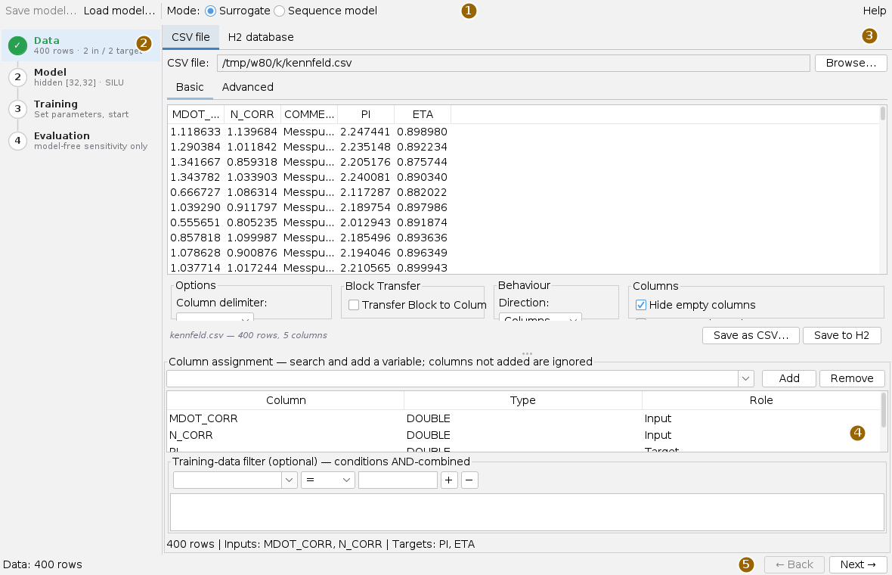
The Surrogate mode learns a surrogate model from a table: target quantities are predicted from input quantities, for example pressure ratio and efficiency from mass flow and speed. The Sequence model mode learns a small language model from text; it has steps of its own (below). The buttons Save model… and Load model… belong to the surrogate and disappear in sequence mode.
On the left are the four steps Data, Model, Training and Evaluation, each with a status line underneath; a finished step carries a green tick. A click on a step jumps there, as do Next → and ← Back. Help at the top right shows the built-in help in place of the steps; Close returns.
A surrogate in four steps
- Data: load a CSV file and add columns as Input and Target.
- Model: set the hidden layers, or let Automatic search find the best architecture and apply it.
- Training: Start training and watch the loss curve.
- Evaluation: check the quality figures, prediction against measurement, slices and contour; then Save model…
Step 1: Data
At the top choose the source: CSV file with Browse…, or H2 database for a table that already sits in an H2 file. The load panel shows a preview; the delimiter is set under Options, the default is the comma.
Under Column assignment search a column in the selection field and press Add; choose the Role in the table. Columns not added are not used; Remove takes a column out again.
| Role | Meaning |
|---|---|
| Input | A quantity the prediction is made from. |
| Target | A quantity that is predicted (regression). Several are allowed. |
| Label (classification) | A class column, e.g. "stabil", "surge", "choke". Exactly one, and not together with targets. |
Whether the model becomes a regression or a classification follows from the roles; the line under the table gives the row count, inputs and targets, or reports an invalid mix. Empty or unreadable cells in a used column stop the data transfer with column name and row instead of silently computing with zero. A decimal comma is accepted.
The Training-data filter is optional: choose column, comparison (=, !=, >, >=, <, <=) and value; + adds the condition, − removes the selected one. All conditions apply together, and only numeric columns can be filtered; the line below says how many rows remain. If a filter column is missing after a data change, its condition is dropped without notice.
Step 2: Model
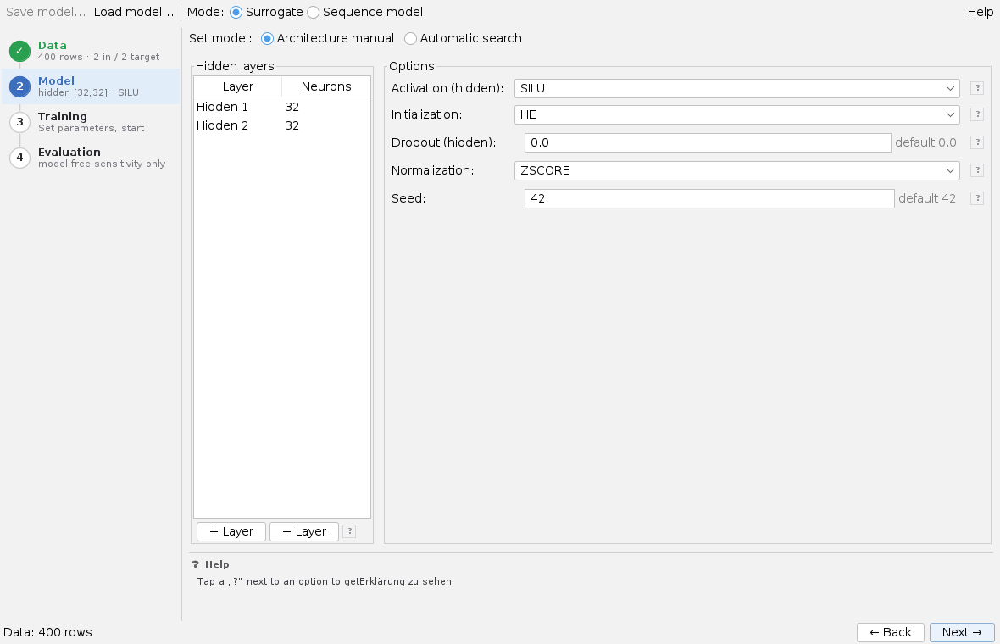
At the top choose Architecture manual or Automatic search. Manually, set up the hidden layers in Hidden layers: + Layer appends one, − Layer removes the bottom one, the neuron count is edited in the table. The app adds the output layer itself. On the right are Activation (SILU, RELU, LEAKY_RELU, TANH), Initialization (HE, XAVIER), Dropout, Normalization (ZSCORE, MINMAX) and Seed. Each number field shows its default next to it; a ? explains the option in the help area at the bottom.
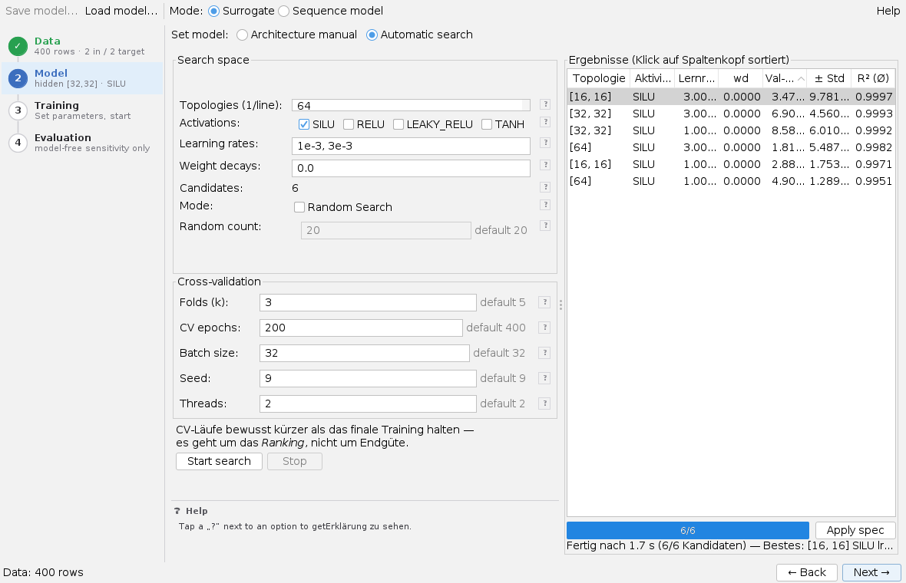
The automatic search tries architectures. Under Search space there is one topology per line (32,32 = two layers of 32), plus the activations, learning rates and weight decays; each combination is a candidate, the number is shown under Candidates. Random Search instead draws Random count candidates with random learning rates. Under Cross-validation, Folds (k), CV epochs, Batch size, Seed and Threads control the run.
Start search fills the table on the right as candidates finish; a click on a column heading sorts. Stop aborts after the current epoch. Select a row and press Apply spec: architecture and learning rate go to the Model and Training steps. The CV runs may be shorter than the final training – what counts is the ranking, not the final quality.
Step 3: Training
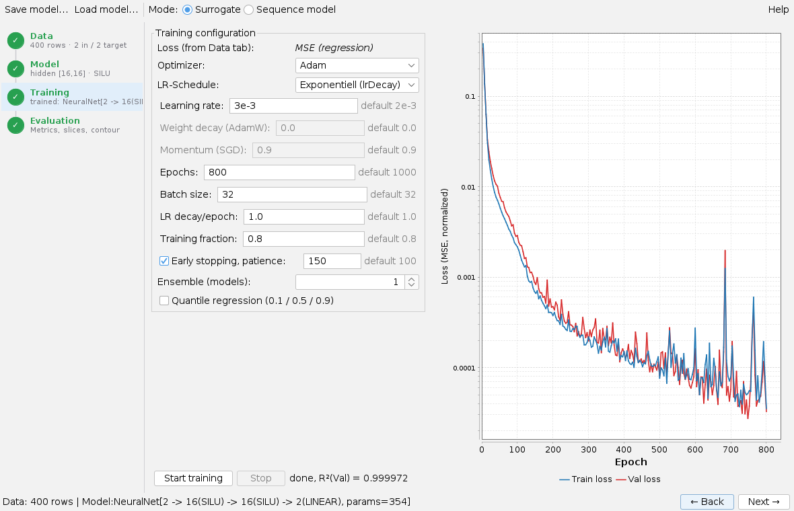
The loss follows from the data: mean squared error for targets, cross-entropy for a label. You choose Optimizer (Adam, AdamW, SGD + Momentum, L-BFGS full batch), LR schedule (exponential, cosine, 1-cycle), Learning rate, Epochs, Batch size, LR decay/epoch and Training fraction; Weight decay and Momentum are only enabled for AdamW and SGD respectively. Early stopping ends the training when the validation loss has not improved for patience epochs, and needs a training fraction below 1.
Ensemble trains several models with different seeds; their spread estimates how uncertain the prediction is – outside the measured points it becomes much larger. Quantile regression trains three models for 10, 50 and 90 % and gives a band that shows the scatter of the data, not the uncertainty of the model.
Start training draws the loss curves as it goes; Stop aborts and keeps the best model so far. Afterwards the app switches to the evaluation. Every trained or loaded model is available to other apps at once, for example to app-maps through SUR(latest, …) in working lines.
Step 4: Evaluation
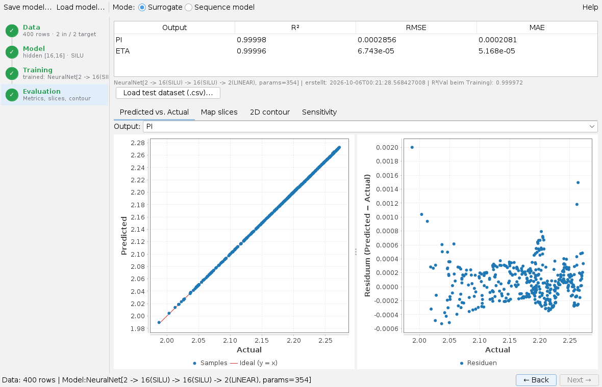
At the top are R², RMSE and MAE per output on the raw scale, below that the network layout, time and R² at training. The tabs below:
- Predicted vs. Actual: prediction against measurement with the ideal line, the residuals next to it; Output picks the quantity. For a classification this shows the confusion matrix (row = true, column = predicted class).
- Map slices: all outputs over one input (X-axis), the other inputs held by sliders; with a band for ensembles or quantiles, class probabilities for a classification.
- 2D contour: one output as a colour field over two inputs; for a classification as a regime map whose colour boundaries are the class boundaries.
- Sensitivity: which input explains how much of an output's variance (see below).
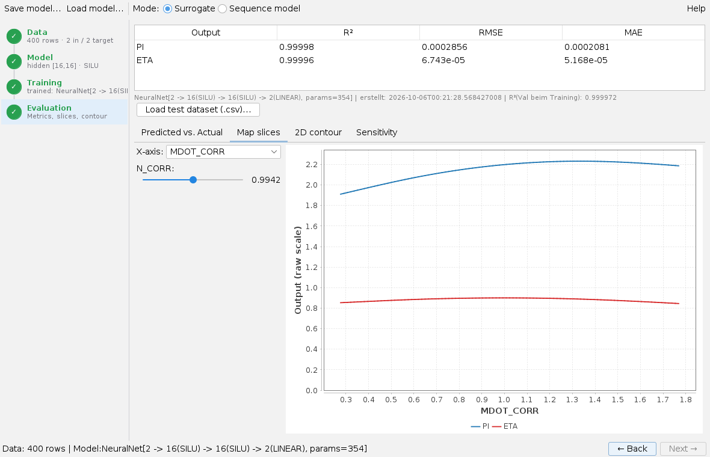
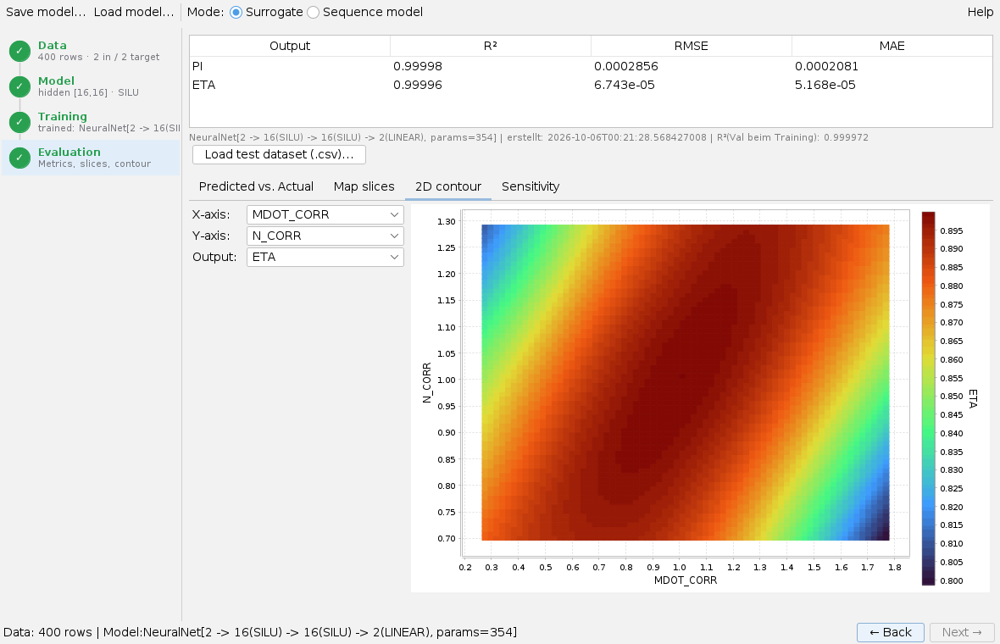
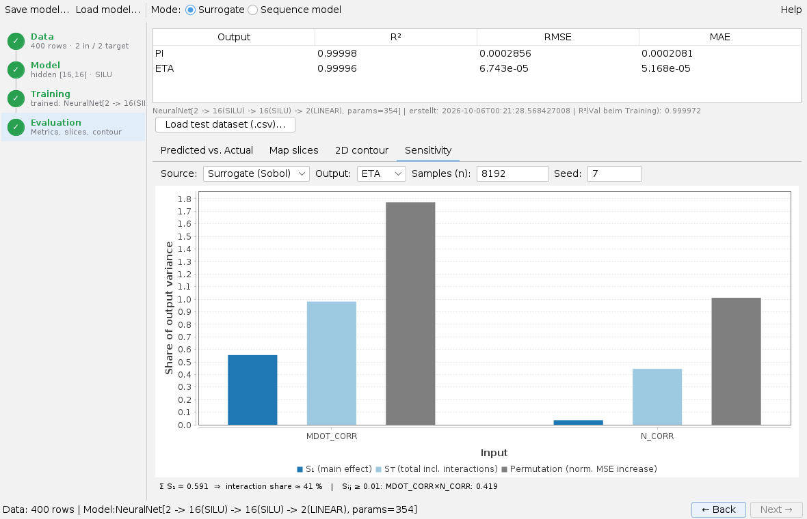
Under Sensitivity, the source chooses between model-free main effects straight from the data – available before the first training – and Surrogate (Sobol): main and total effect of each input, second-order interactions and permutation importance, computed from Samples (n) evaluations of the model. Compute starts; the line under the chart gives the interaction share.
Load test dataset (.csv)… rates the model on a separate CSV. Columns are matched by name; their order does not matter. The table gives RMSE and R² per output, or the accuracy, plus a verdict against the R² at training: generalises well, slight or clear overfitting.
Outside the measured points the network guesses. It continues smoothly and confidently and does not say that it is extrapolating. Contour and slices show the model also where no measurement was taken; an ensemble makes the uncertainty visible. And a high R² is easier to get with widely scattered targets than it looks.
Saving and loading the model
Save model… writes the model with its normalisations and the column names as an .ennet file; the button becomes available after the first training. Load model… opens such a file and goes straight to the evaluation. The column names are the contract between model and data: a test dataset or app-maps finds the quantities by their names. When the workspace is saved, the app remembers the CSV path, roles, model, search and training settings and the model file last saved or loaded, which it reopens at the next start.
Sequence model mode
With Mode: Sequence model the app switches to five steps of its own. A step becomes available once the previous one is done.
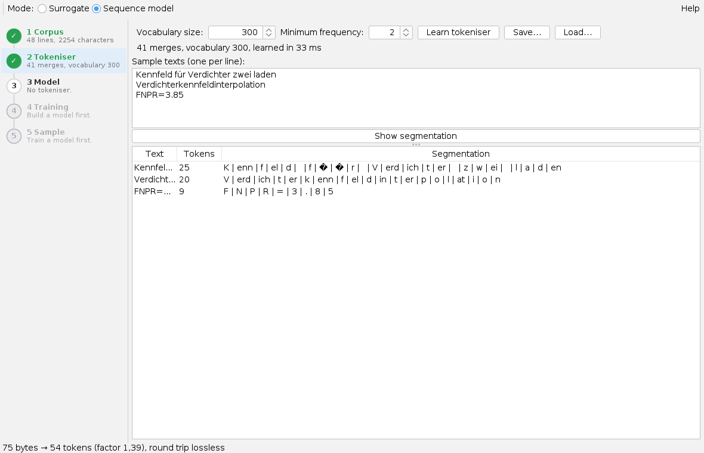
- Corpus: Load text file… reads a text file, one example per line; lines with
#do not count. With Template file (intent | pattern) the app generates Examples per template from patterns. The text can be edited in the field; Apply edited text takes it over. - Tokeniser: choose Vocabulary size and Minimum frequency, Learn tokeniser. Show segmentation shows how the sample texts are split; the status line reports whether the round trip is lossless. Save… and Load… keep the tokeniser.
- Model: choose Layers, Model width, Heads, Feedforward width, Sequence length and Variant (classic or modern), Build model. The model width must be divisible by the head count.
- Training: Epochs, Sequences per step and Learning rate, then Start training; Cancel stops. The curve shows the cross-entropy for training and validation.
- Sample: the model continues a Start text by Length (tokens). A Temperature below 1 makes the text more predictable, above 1 wilder; top-k admits only the k best tokens; the same Seed gives the same text. Generate writes, Listen reads the text with a rule-based voice.
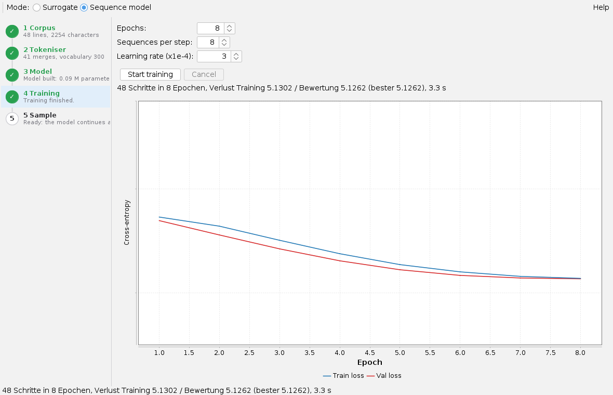
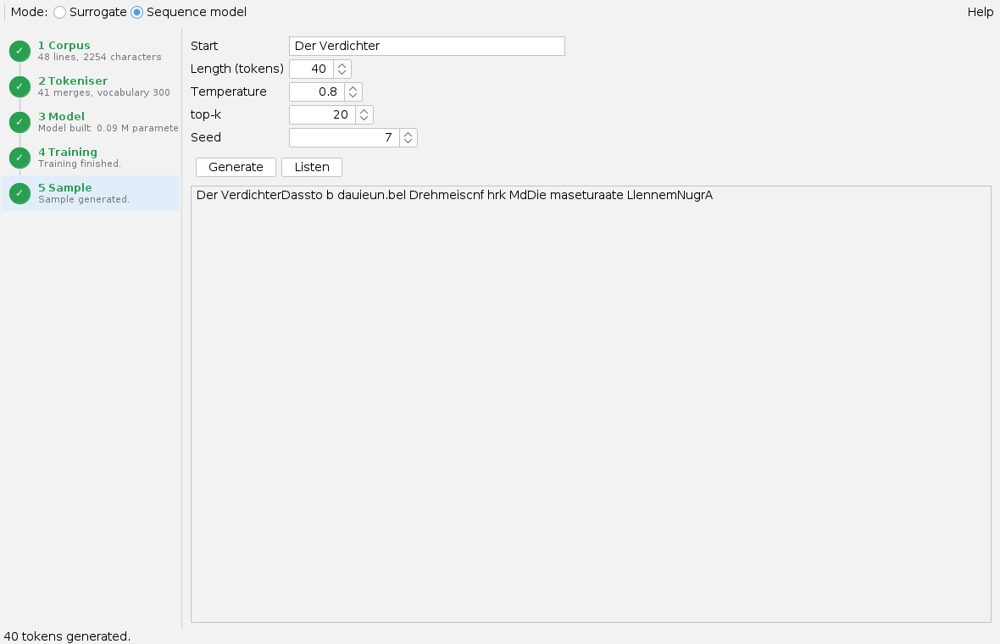
The sequence mode is meant for trying things out: coherent text needs much more text and training than shown in these pictures. The Save model… and Load model… buttons do not apply here.
Keyboard and mouse
Alt+U opens the app. The charts zoom with the mouse wheel. A click on a column heading of the search results sorts. The app has no other shortcuts.
Limits
- The load panel does not guess the delimiter.
- In the Sensitivity tab, Compute sits at the end of the input row and lies outside the visible area in a narrow window; widen the window.
- The test evaluation needs the same column names as the training; column names with commas are not allowed.
- The Sobol sensitivity and the contour evaluate the model many thousand times; with large networks this takes a while.
- In sequence mode corpus, tokeniser and model are not saved with the workspace; only the tokeniser can be saved as a file.
When a surrogate pays off and what the app can do is described in the overview; the computation behind it in neural and autograd.